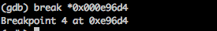
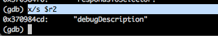

All the IOS devices released uptil now are based on the ARM architecture. All the Objective-C code that we write while developing IOS applications is first converted into ARM assembly before being converted to machine code (1s and 0s). With good understanding of the ARM assembly language and with good knowledge of debugging using GDB, it is possible for a hacker to decipher the Objective-C code during runtime and even modify it.
For this article, we will be using a sample application GDB-Demo from my github account. Make sure to install and run it on your IOS device. If you don’t have a registered developer account to run this on your device, you can follow the instructions mentioned here.
Now let’s SSH into the device.
Now lets start GDB and ask GDB to hook into our application as soon as it is started. This is done by using the command attach –waitfor Appname. Optionally, you can also start the application on your device and hook into the running process using the attach command as shown below.
.
Now once GDB has hooked into the application, you will notice that the application is in a paused state. You can resume the application by just using the c command. But let’s do some investigation before that. Just like any other architecture, the memory in ARM is divided into registers. All these registers are 32 bit in size (except in IOS 7 which is 64 bit) and their purpose is to hold and move data between each other. You can find information about these registers by just using the info registers command.
Please note that this command does not print out all the registers in ARM. To print all the registers, use the command info all-registers
To dump the diassembly, just use the disassemble or disas command. This will give us the assembly dump for the next few instructions. We can also dump the assembly of a particular function by specifying the function name after the disas command. For e.g, to dump the assembly for the main function, use the disas main command.

If we look at the application that we just installed on our device, we will see that it is just a simple application that prompts for a username and password.
We can also see from the class-dump-z output of the application that there is a class named ViewController and a method named -(void)loginButtonTapped:(id)tapped;
With GDB, we can also set breakpoints in the application. You can type the method names to set breakpoints to. Just use the command b functionName. You can also specify the method signature without the class if you are unsure and GDB will ask you which class you want to set the breakpoint on.
Please note that instance methods are prefixed with a minus sign – whereas class methods are prefixed with a plus sign + as shown below. For e.g, sharedInstance is a class method that returns the shared instance of a singleton class.
You can see all your breakpoints using the command info breakpoints.
You can remove any breakpoint by using the command delete followed by the ID of the breakpoint.
Anyways, lets set a breakpoint for the method loginButtonTapped:.
We can then resume the app by using the continue or the c command.
Lets tap on the login button in the app. This will trigger our breakpoint.
We can then find some of the next instruction by using the disassemble command.
To set breakpoint any particular instruction, add the asterix sign before the address for that instruction.

In part 3 of this article series, we also learnt about the function objc_msgSend. Objective-C is based on messaging and whenever a message is being sent, the objc_msgSend fucntion gets called. In the disassembly code for the function loginButtonTapped: that we printed out, there are a lot of objc_msgSend calls. A good way to find this out is to look for the blx instruction. Wherever you see a blx instruction, you can be sure that an objc_msgSend call is happening.

Whenever a new method is called or a property is accessed, the objc_msgSend function gets called. So if we can set a breakpoint for the objc_msgSend call and find a way to print out the method being called and the object that calls this method, then this will give us a very good insight into the flow of the app. We had already looked at how Snoop-it was able to find out all the traced calls in part 9 of this series. To find out the methods being called, first we need to look at calling convention for ARM. Here is a screenshot of the ARM calling convention from Wikipedia.
The important line to note here is this.
So we can set a breakpoint for every objc_msgSend call and find the parameters passed to this function by using the values of r0-r3 registers. Let’s have a look at the signature for objc_msgSend call. Here is a screenshot taken from Apple’s documentation.
So the first two arguments to the function are self – A pointer that points to the instance of the class that is to receive the message and op – The selector of the method that handles the message.. The selector is nothing but the signature for the message. For e.g if a method has the prototype -(void)addOjectsToArray:(NSArray *)array then the signature for it would be addOjectsToArray:. And we also know that r0 to r3 are used to hold argument values passed to a subroutine, hence we can conclude that r0 will contain selfand r1 will contain op.
Let’s understand this through an example. Set up a breakpoint for the objc_msgSend call and continue until the breakpoint is hit.
As we learnt, r0 should contain a pointer to the instance of the class that is to receive the message, r1 should contain the selector and after that starting from r2 should be the arguments for the method. But first we should learn about the x command. x stands for examine and helps us to examine memory in many different formats. So we can specify the format in which we want to examine the memory. To find out all the options available with this command, use the help x command.
Let’s start by examining r0. We know it will contain a pointer to the instance of the class that will receive the message. Hence the format is address and we use x/a. We use $ before r0 because we want to examine the memory, and hence the $ sign.
We can see that the receiver is an instance of the UIRoundedRectButton class. Now lets try to examine the value in r1 register. We know that it contains the selector, i.e the signature of the method. This is a string and hence we use x/s.
Now, we have to find out the arguments to this method. This can be tricky as we don’t know what format is r2. But looking at the selector which is respondsToSelector: and using some common sense, we can assume that the argument will be a selector, and hence we again use x/s to examine the memory in string format.

Alright, so the argument is debugDescription. From the method selector, we can see that there is only one argument to this function, hence we don’t worry about examining further registers. So now, we can say that the method being called must be something like this.
-[UIRoundedRectButton respondsToSelector:@selector(debugDescription)];
But there are so many objc_msgSend calls and examining all of these calls one by one is such a pain. So lets try and automate this process. In part 3 of this series, we learnt how to use the commands option in gdb to print something whenever a breakpint is hit. Let’s use it here as well.
Now press c to continue. You will see all the methods being called. This tells us so much about what is happening in the application.
Now let’s try and print this in Objective-C like syntax. We are going to use the function class_getName mentioned in Apple’s documentation. As you can see, it requires an argument which is the class object, hence we will pass it r0.
Now rewrite the calls in commands like this.
Type c to continue and now as you can see, the information is in a much more readable format.
This tells us so much about what is happening inside an application. In the next article, we will take our knowledge gained from this article and learn how to perform runtime manipulation with GDB.